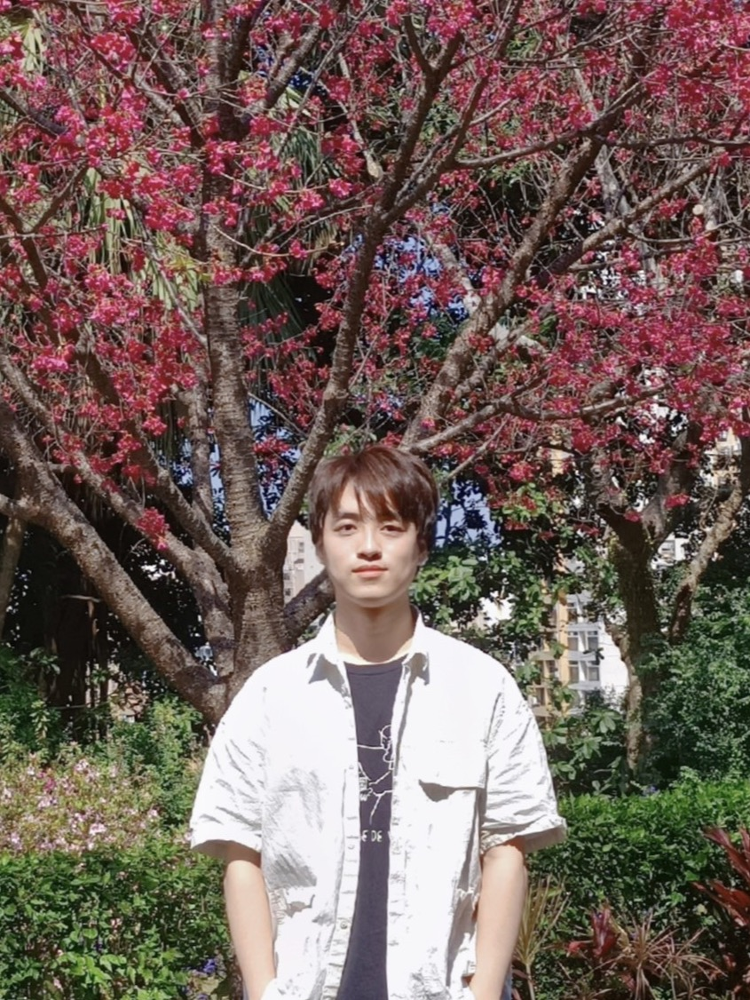

Yushi Feng
PhD Student
Division of AI & Data Science
School of Computing & Data Science
The University of Hong Kong
Email: fengys [at] connect.hku.hk

PhD Student
Division of AI & Data Science
School of Computing & Data Science
The University of Hong Kong
Email: fengys [at] connect.hku.hk
I am a PhD student at The University of Hong Kong, advised by Prof. Lequan Yu. Before that, I received my BSc from HKU in 2024.
Current Research Interests:
* indicates equal contribution; † indicates corresponding authorship.
Technical Report, 2026. [arXiv] [GitHub] [Dataset] [Hugging Face]
AAAI 2026 (Oral, top 4.5%).
NeurIPS 2025 (Main Track).
Neural Networks, 2025.
EMNLP 2026 (Main Conference). [arXiv]
EMNLP 2026 Findings.
ICML 2026 SD4H Workshop.
ICCV 2025 CVAMD Workshop (Full Paper, Oral).
Invited Talk, AgiBot × Lumina Embodied AI Workshop, Shenzhen, Sep. 2026.
Oral Presentation, AAAI 2026, Singapore EXPO, Singapore, Jan. 2026.